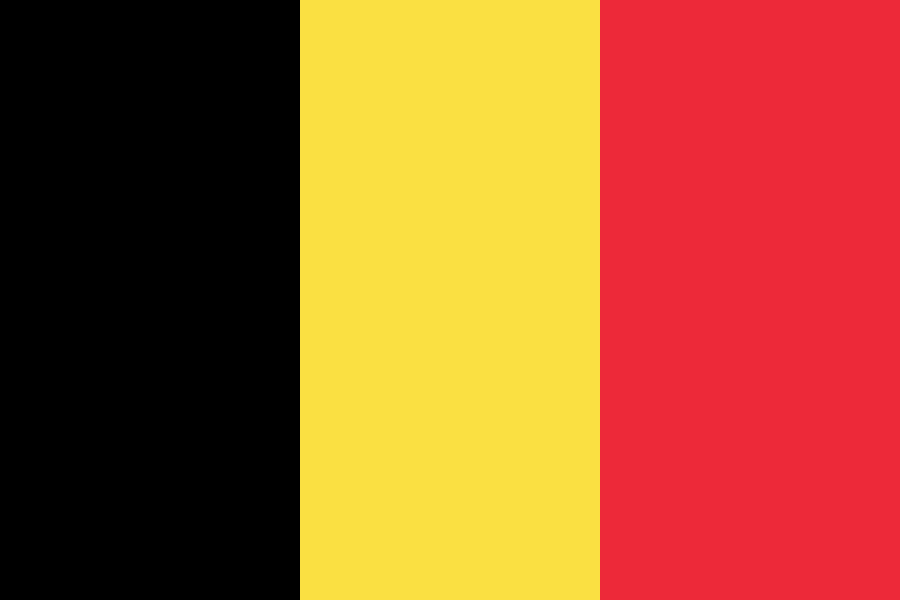

Belgien traf 2022 eine der härtesten personenbezogenen Maßnahmen in der EU und wies 21 russische Botschafts- und Konsulatsangehörige aus. Das Russische Haus in Brüssel arbeitete weiter und lud noch im April 2026 zu Veranstaltungen. Der Fall zeigt, dass Diplomatenausweisung und Kulturvertretung zwei getrennte Hebel sind – und dass die belgische Rechtsgrundlage des Hauses öffentlich unbelegt bleibt.
| Einrichtung | Russisches Haus Brüssel (Russian House Brussels) |
|---|---|
| Ort | Rue du Méridien 21, Brüssel |
| Trägerangabe | Nach Eigendarstellung der russischen Botschaft zugeordnet; eine belgische Bestätigung der Trägerschaft wurde nicht gefunden |
| Betriebsbeginn | Nach Rossotrudnitschestwo-Eigenangabe Mitte der 1990er Jahre |
| Vertragslage | Belgisch-russischer Verständigungs- und Kooperationsvertrag vom 8. Dezember 1993; ein zentrumsspezifischer Errichtungs- oder Statusvertrag wurde nicht gefunden |
| Maßnahmen | Ausweisung von 21 russischen Botschafts- und Konsulatsangehörigen am 29. März 2022; allgemeiner Sanktionsvollzug |
| Status August 2026 | Präsenzbetrieb belegt. Mehrere Veranstaltungen im April 2026 sind durch Eigenquellen dokumentiert. Ein hausbezogener Vollzugsakt ist nicht veröffentlicht. |
| Offen | Statusurkunde, Rechtsträger, Akkreditierung, Eigentum an der Immobilie, Hauskonten und Einzelvollzug |
Belgien hat 21 russische Entsandte ausgewiesen und setzt die EU-Sanktionen um. Beides ist belegt – aber keine der beiden Maßnahmen ist dem Russischen Haus oder seinen Beschäftigten zugeordnet. Der belgische Fall zeigt operative Kontinuität des Hauses trotz massiver personenbezogener Diplomatenmaßnahmen. Leseregel: „Offen“ bedeutet, dass eine Aussage in den geprüften öffentlichen Quellen nicht belegt ist. Das ist kein Beweis des Gegenteils. EU-Listung, nationaler Vollzug, politische Nichtkooperation, Vertragskündigung und tatsächliche Betriebsschließung werden getrennt bewertet.
Für Belgien wurde kein zentrumsspezifischer Errichtungs- oder Statusvertrag gefunden. Der belgisch-russische Verständigungs- und Kooperationsvertrag vom 8. Dezember 1993 belegt den bilateralen Vertragsbestand, nicht aber eine besondere Rechtsstellung des Hauses.
Die Zuordnung zur russischen Botschaft beruht auf der Selbstdarstellung des Hauses und auf Angaben Rossotrudnitschestwos. Betreiberangaben belegen Selbstdarstellung und Aktivität, aber weder Rechtspersönlichkeit noch diplomatischen Status, Eigentum oder eine Genehmigung des Gaststaats.
Ob das Haus in der belgischen Diplomatenliste als Missionsbestandteil notifiziert ist, war aus den geprüften Quellen nicht zu klären. Der belgische Protokollleitfaden regelt die Notifikation und Registrierung von Missionspersonal allgemein, enthält aber keine Aussage zu dieser Einrichtung.
Belgien wies am 29. März 2022 21 russische Botschafts- und Konsulatsangehörige aus und begründete dies mit Spionage- und Einflussoperationen. Der geprüfte Jahresbericht des Außenministeriums dokumentiert den diplomatischen Kontext, trägt die Zahl 21 aber nicht selbst.
Der belgische Föderale Öffentliche Dienst Finanzen führt eine laufend aktualisierte Übersicht zur Umsetzung der EU-Sanktionen. Sie belegt den allgemeinen Sanktionsvollzug. Ein veröffentlichter hausbezogener Vollzugsakt – Kontensperre, Immobilienmaßnahme oder Betriebsuntersagung – wurde nicht gefunden und wird hier nicht aus allgemeinen Sanktionszahlen abgeleitet.
Belgien gehört zu den EU-Staaten mit den weitreichendsten personenbezogenen Maßnahmen: 21 Ausweisungen an einem Tag. Dennoch blieb das Russische Haus in Brüssel geöffnet und veranstaltete noch im Frühjahr 2026 Programme vor Ort.
Für den deutschen Vergleich folgt daraus vor allem eine begriffliche Trennung: Die Ausweisung mutmaßlicher Nachrichtendienstangehöriger und der Betrieb einer Kulturvertretung sind rechtlich verschiedene Hebel. Der eine ersetzt den anderen nicht.
Zugleich ist Belgien ein Beispiel für eine dünne öffentliche Beleglage: Wer Maßnahmen gegen ein Haus erwägt, muss zuvor Akkreditierung, Rechtsträger, Eigentum und konkrete wirtschaftliche Ressourcen der gelisteten Agentur nachweisen. Genau diese Angaben sind im belgischen Fall öffentlich nicht verfügbar.
Wo sich das Einzeldokument eindeutig belegen ließ, verweist der Link unmittelbar darauf – etwa auf Gesetzblätter, Vertragsveröffentlichungen und Parlamentsdokumente. Die Ausgangsakte dokumentiert für die übrigen Belege nur Herausgeber, Titel und Datum, nicht die vollständige Dokumentadresse; dort führt der Link auf die belegte Quelldomain. Diese Tiefenlinks sind ausdrücklich offen und werden nachgetragen, sobald die Fundstelle eindeutig ist.